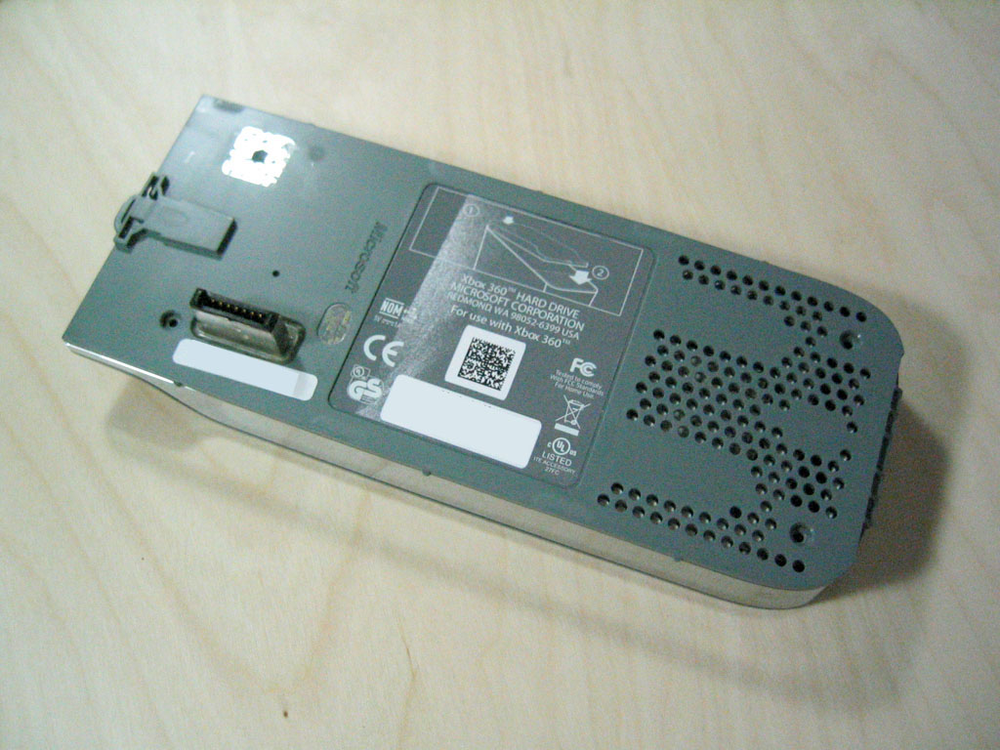
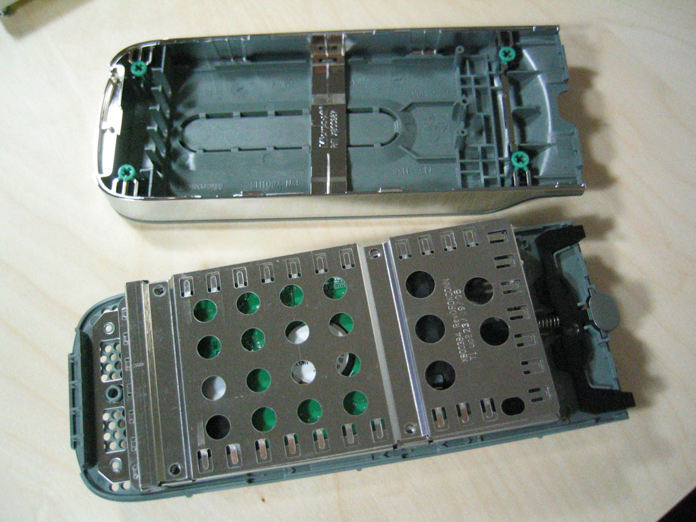

General Information
 The Xbox 360 harddisk with case, Downside
 The HDD inside its case
 The HDD outside of its metalcasing
The HDD outside of its metalcasing
- The drive is manufactured by Samsung (Seagate Drives have been used in some systems. Unknown if contents are the same) and is required to play backward compatible Xbox games.
Samsung details:
- Model: SAMSUNG HM020GI
- Revision: YU100-06
- Serial Number: S0A8J20YA44356 (of course this is different for every HD)
- Capacity: 18.63 GB

Seagate details:
- Model: ST920217AS
- Revision: 3.01/LD25.1
- Capacity: 20 GB
Hitachi details:
- Model: HTS541020G9SA00 (Travelstar)
- Revision: C60D
- Capacity: 20 GB
- Vendor Support URL: [1]
Confirmed Facts
- The harddisk is not locked in any way. A completely zero drive will only be read by the Xbox 360 if the relevent headers are in place on the disk.
- A FATX partition exists on the drive
- For a drive to be considered valid it must have the 'Plain text HDD info' and MS logo PNG. If these elements do not exist then no HDD is detected. So there is no way for third parties to manufacture HDDs without a license or without infringing Microsoft's copyright. (The Gameboy used the same idea for cartridges). US courts have held (in at least four separate cases) that Copyright cannot be used to prevent interoperation.
- The 360's serial number is required when formatting a HDD.
- The drive's capacity is reported as 13GB by the 360 immediately after formatting (20Gb HDD only).
Speculation
- There is no information at this time that leads us to believe the HDD is encrypted, there are plenty of clear text entries that can be read.
- The FATX partitions on the drive seem to be a Big Endian version of the 1st Generation Xbox's FATX filesystem. Work is underway to modify the Linux kernel driver to verify this. There is some initial support for this file system in [CVS].
Drive contents
The Xbox uses the FATX format for its partitions. The FATX page has more information about the partition locations and the FATX format itself.
Power connector

| Pin # | Signal Name | On XBOX 360 | Signal Description |
|---|---|---|---|
| 1 | V33 | Not connected | 3.3V Power |
| 2 | V33 | Not connected | 3.3V Power |
| 3 | V33 | Not connected | 3.3V Power, Pre-charge, 2nd mate |
| 4 | Ground | Connected | 1st Mate, Pre-charge, 2nd mate |
| 5 | Ground | Connected | 2nd Mate |
| 6 | Ground | Connected | 3rd Mate |
| 7 | V5 | Connected | 5V Power |
| 8 | V5 | Connected | 5V Power |
| 9 | V5 | Connected | 5V Power |
| 10 | Ground | Connected | 2nd Mate |
| 11 | Reserved | Not connected | - |
| 12 | Ground | Connected | 1st Mate |
| 13 | 12V | Not connected | 1st Mate, Pre-charge, 2nd mate |
| 14 | 12V | Not connected | 2nd Mate |
| 15 | 12V | Not connected | 3rd Mate |
This (probably) explains why normal 3.5" sata drives won't even spin up (missing 12V). So if you want to use a 3.5" drive you need to connect your own 12V.
This table plus more info can be found in the electrical specification here. (Table 17, Page 117)
External Links
- http://watertastesgood.com/xbox/delta.py
- Tool to help do binary diffs of HDD images, courtesy of Daeken
- [http://www.xbox-linux.org/wiki/Xbox_Partitioning_and_Filesystem_Details]
- [http://www.xbox-linux.org/wiki/Differences_between_Xbox_FATX_and_MS-DOS_FAT]